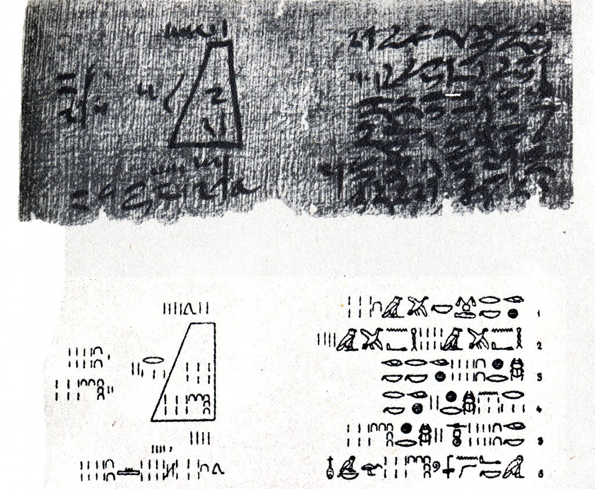
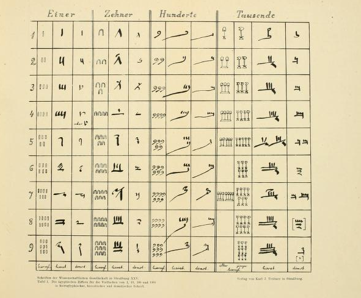
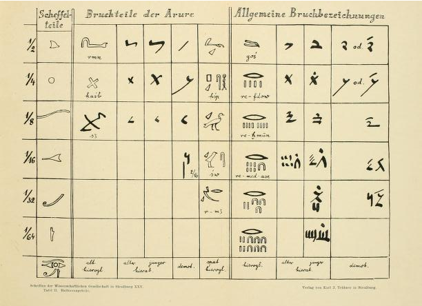
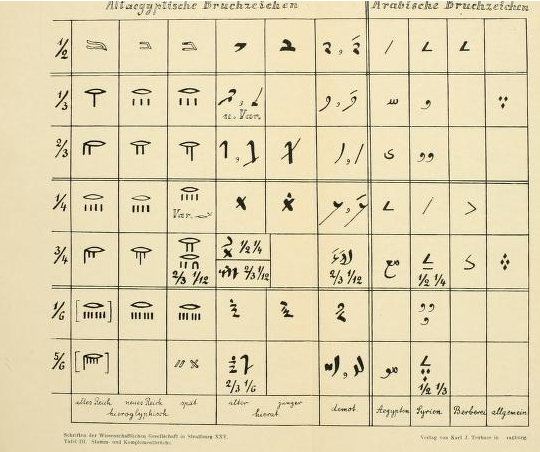
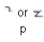
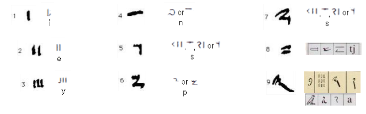
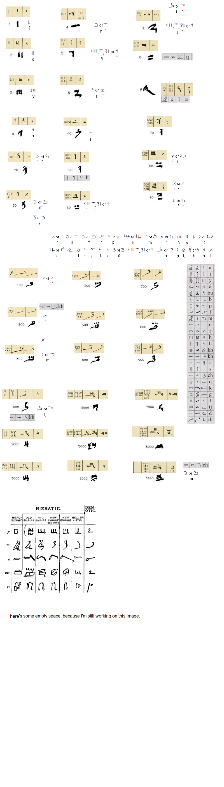

This part wasn't edited yet, it may be
too drafty, so if it doesn't go, probably it's not shaped yet.
Let's get real and put here what we found about egyptian numerals:
Here's the explanation of this mathematical task: http://www.math.tamu.edu/~dallen/history/egypt/node4.html
Much
less known, yet found in Von
Zahlen und Zahlworten bei den alten Ägyptern und was für
andere
Völker und Sprachen daraus zu lernern ist : ein Beitrag zur
Geschichte von Rechenkunst und Spracheby Sethe, Kurt,
1869-1934
Egyptian demotic numerals:

and
the way demotic numerals were quoted by someone else,
naturally
making it worse, and
I don't see any other reason for him to do so than the
shameful
copyright practice:

And
some other sources on the same topic:
and
once again Egyptian Demotic Numerals:
The
Idea was to compare demotic numerals to demotic alphabet,
to see if
we can find egyptian alphabetic canon this way:
I see demotic numerals as a chance to find the Egyptian alphabetic canon. If it's alphabet or halaḥam, halaham for those who searches, we'll see in a moment:
The
first four were simple. And three vowels in the beginning
of the
alphabet, as egyptian was found before. But
then why the following letter isn't labial? Which returns
me to one
abnoxious suspicion that 𓈖
is
actually M, not N. Meer,
море, mare, I wanted to see how the see is in koptic, but
google's translator doesn't support koptic. And I feeel
like we must
ressurect kemetic language as jews did to hebrew. A huge
bulk of
human culture lies there and we're like nah, we don't want
it.
But
if M is the fourth one, could it correlate to halaḥam? We
know that
h can turn
into vowel and l is like half of y, for
it's y when it's
double. We know halaḥam from a
halaḥam canon of Ge'ez:
Notice
how three first lettes, allegedly ha
la
ḥa
in Ge'ez
remind
european vowels U A ᛦ
and
the brooms are y in both runic and demotic (demonic?
demonic indeed,
that what christians would call it) and the last time I
regarded ᛦ
I found it to be q in some versions or dialects.
Either way they're
Though you saw how alphabetic order may differ from one nation to another, don't expect egyptian halaḥam to follow it through.
other
than 

Here's my first guess, but I still have to merge more in egyptian and around it to be more certain and correct.
What is magnificient (even though unrelated to what I knit here) is 8 looks like double 4
Oh
why do I share this raw meat? People will hate me! Let's
make it not
raw, alive, show them how I work:

All of the sudden I realize that I need more signs, I need bi- and tri-lateral demotic phonograms
It's fascinating how hard to find them, I asked people in some vk egyptology society for help & will keep you informed.
Or I just need more demotic signs in general. If all digits will have twins in other part of the language, I will bet on the fact of them being connected.
This is another page from Ebers manuscript. I think it's the best of all to watch that thing a whole to figure out what is that weird reverse K they used there.
I'm amused with some similar features of Babylonean numerals, so I show them to you too: